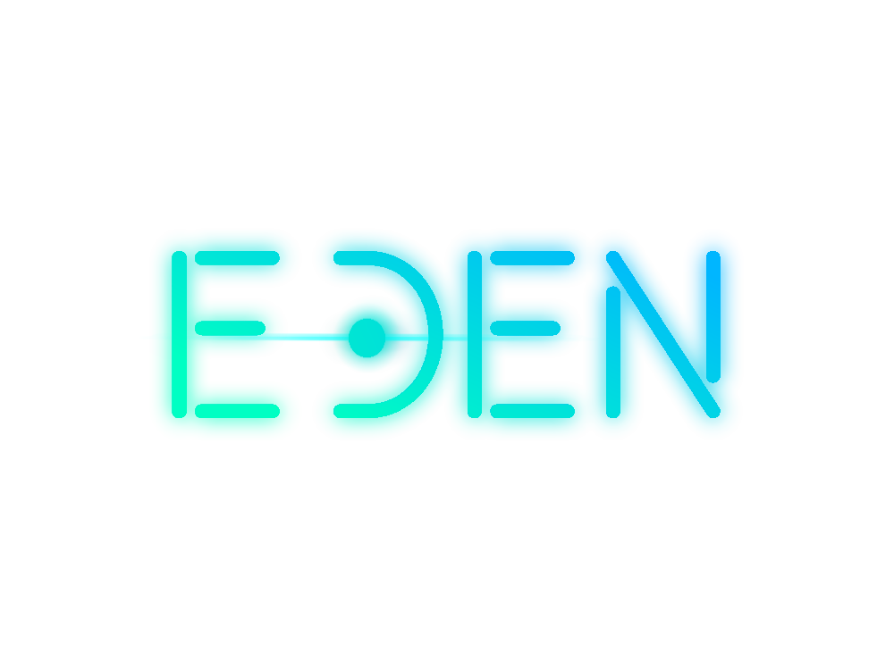
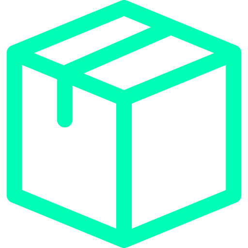
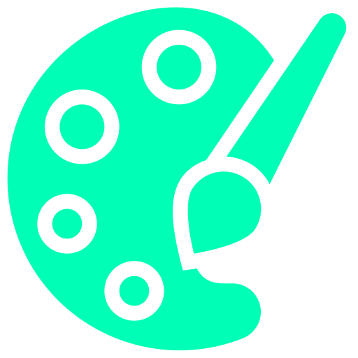
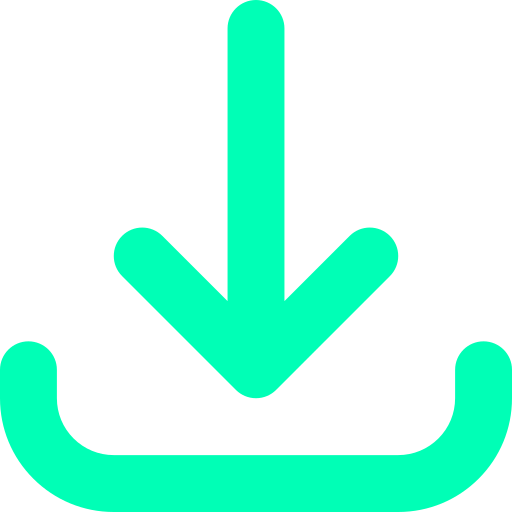
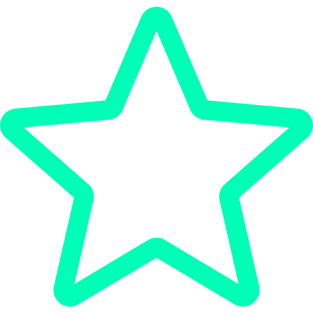
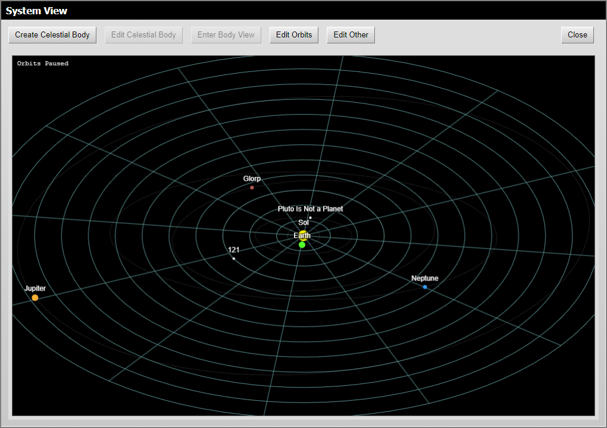
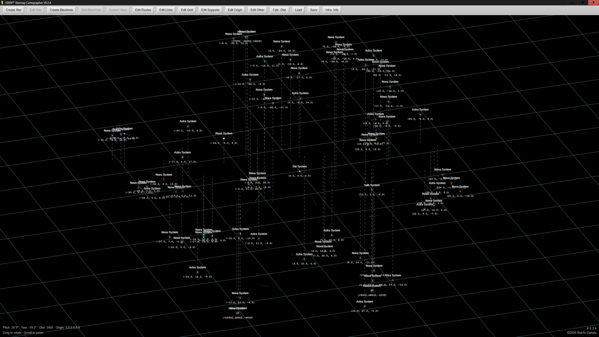
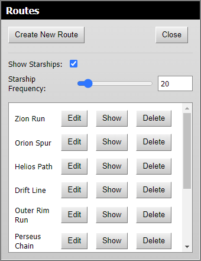
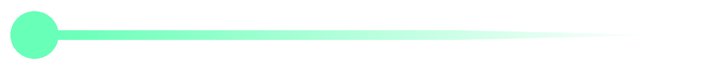

0100100001100101
0110110001101100
01101111!


0100100001100101
0110110001101100
01101111!

EDEN™ Starmap Cartographer
Create a Universe from Nothing
EDEN™ Starmap Cartographer is a simple 3D starmapping software for worldbuilders, science-fiction enthusiasts, and those interested in astronomy. The program boasts several quality of life features and was directly inspired by the long deprecated CHView. It aims to offer a simple, free, and convenient way for worldbuilders and writers to visualise their starmaps using all 3 dimensions—a task previously impossible for most. The software is currently being developed by BobTo Games.
3D View
for easy
visualization!
Exports
fully
supported!
Create
the universe
of your dreams!


Easy
experience!

Simple
customization!

Free
Forever!

Limitless
worlds!
EDEN™ Starmap Cartographer
Create a Universe from Nothing




Complete Creative Control
EDEN™ Starmap Cartographer offers complete creative control to the user.
Whether it be
the look of the grid or the luminance of the stars, nearly everything can be tweaked and altered to your
satisfaction, with these settings saving on a per-map basis—allowing each and every starmap you make to maintain
its own specific appearance.
Beyond this, create as many stars as is needed wherever is needed;
controlling their size, color, name, information, and affiliation. Stars, however, are no the only objects in
space, with EDEN™ attempting to address that—including both black and white holes for whenever the need arrises.
In the future, expect even more unique celestial objects to be added, although for now these options will have to
suffice.
Edit Individual Star Systems
The System View feature allows you to enter any star system you have and add custom planets, dwarf
planets, and more.
Set their size, name, color, orbit, and even orbit speed, as well as add moons, space
stations, and more to individual objects. And now, with the Show Orbits and Orbit Scale settings, view your custom
systems in the primary starmap view. Allowing you and others to see the make-ups of individual systems across your
starmap.
Create Custom Routes
Finally create simple, easy routes between star systems in a 3D environment. With support for
editing, moving around, and reordering.
And with the Calculate Distance tool, get the exact length of any
specific
route. Allowing you to calculate detailed travel times using the speed of interstellar travel unique to your
setting.